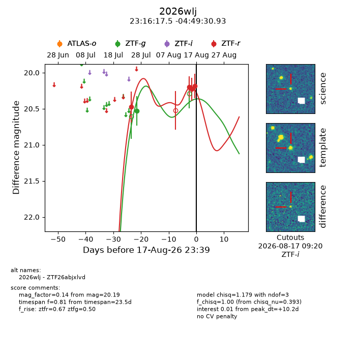
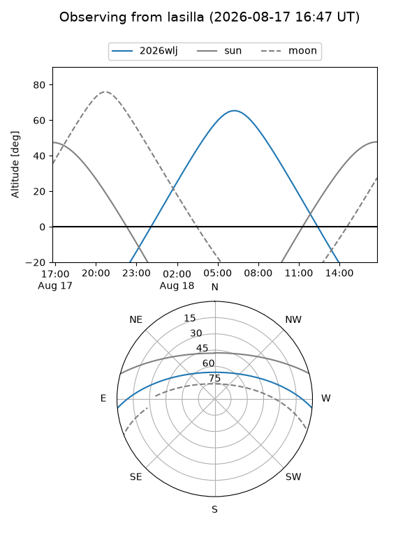
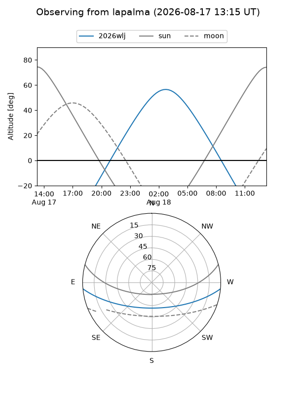
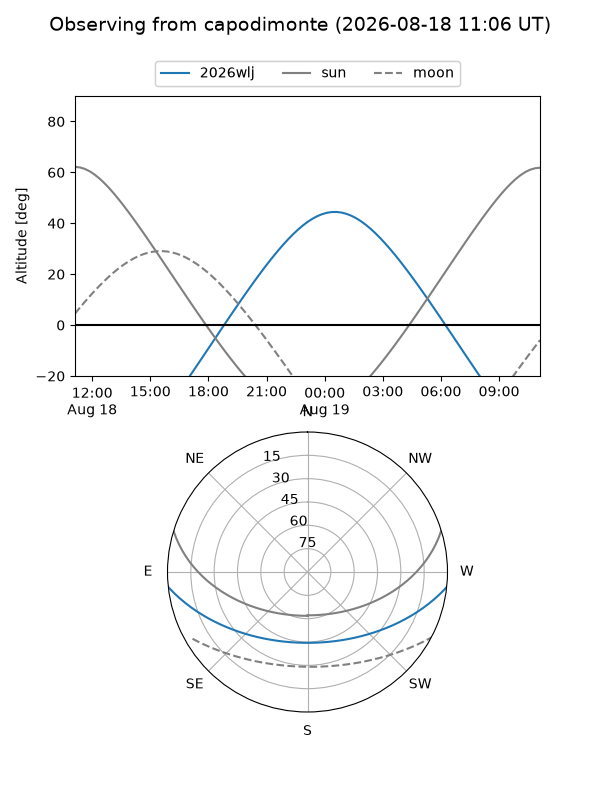
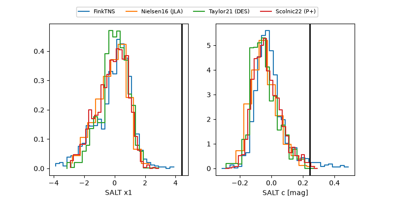

2026wlj
Target 2026wlj at 2026-08-18 11:40
Aliases and brokers:
FINK-ZTF: ztf.fink-portal.org/ZTF26abjxlvd
Lasair-ZTF: lasair-ztf.lsst.ac.uk/objects/ZTF26abjxlvd
ALeRCE-ZTF: alerce.online/object/ZTF26abjxlvd
YSE-PZ: ziggy.ucolick.org/yse/transient_detail/2026wlj
TNS name: wis-tns.org/object/2026wlj
Direct TNS query: direct search
alt names
ZTF26abjxlvd (ztf,fink_ztf)
2026wlj (tns,yse)
Coordinates:
equatorial (ra, dec) = 349.0729,-4.82526
equatorial (HMS+DMS) = 23:16:17.50,-04:49:30.93
galactic (l, b) = (73.2378,-58.19613)
Flags:
TNS type: nan
peak dt: +10.7
Photometry:
last ztfg=20.53, ztfr=20.19
1 ztfg, 4 ztfr detections
Lightcurve

Visibility



Additional plots
